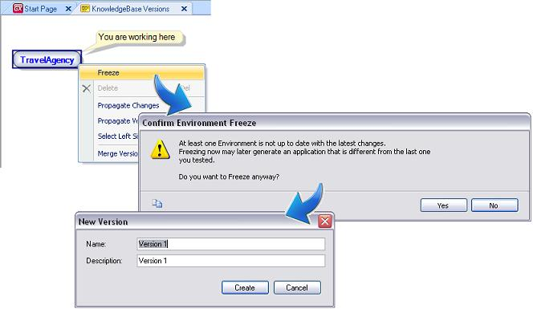

An application life cycle reaches several "milestones" that are important to people working on (or with) it. The application entering the Test phase, Quality assurance or Production are just a few examples of these milestones. It is important, in the development process, to keep track of these milestones and save the application state for several reasons. They let you answer questions like:
In GeneXus these milestones are called Frozen Versions. They are read-only photos of an application at a given time. In Software Configuration Management the term "label" is also used to identify a frozen version. There can be as many frozen versions as are needed in a Knowledge Base. The purpose of frozen versions is to reflect important milestones (deployment, installation in Customer X, etc.) in an application's life cycle. A version in GeneXus is a read-only copy of an application. It's like a printed photo, which can be observed and/or analyzed but not modified. Fig 1. Freezing a version (creating a new Frozen Version)The action of creating a new Frozen Version is called "Freezing" a version.
Import Backup When an Import is performed over a Knowledge Version, if the Automatic Backup property is set to True, a special Frozen Version is created to backup the current Development Version. This new Frozen Version will have only one action available to execute: Revert. By executing this action, the active Development Version will be changed to the Import Frozen Version status or other Development Version status. Tip: Versions with “pending changes” (that is, with objects that were changed since the last Impact Database was run) cannot be frozen. If you attempt to execute the freeze action, the following message appears: “Changes have been made since the last Build of Environment '.Net/Java Environment'. You must execute Build All before freezing.”
|